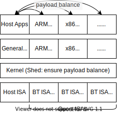
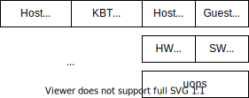
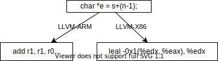
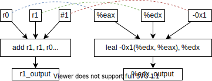
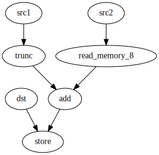
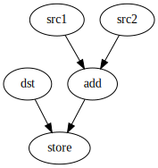
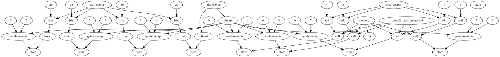
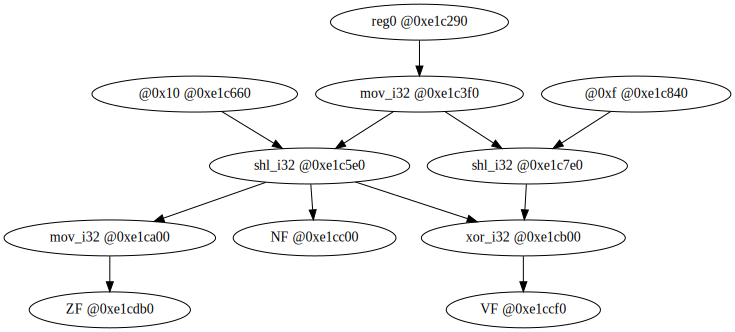

Doc Thoughts
🤓xieby1
2022.5.?
1 Motivation
- HM (Homogeneous)
- Single-ISA HT (Heterogeneous)
- Multi-ISA HT
📄Survey: 2015. Heterogeneous Multi-core Architectures, Tulika Mitra, jip, 15
1.1 Multi-ISA HT
😎Ashish Venkat
| Y | C/J | Cit | Name |
|---|---|---|---|
| 2012 | asplos | 95 | Execution migration in a heterogeneous-ISA chip multiprocessor |
| 2014 | isca | 112 | Harnessing ISA diversity: Design of a heterogeneous-ISA chip multiprocessor |
| 2016 | asplos | 26 | HIPStR: Heterogeneous-ISA Program State Relocation |
| 2018 | doc | 5 | Breaking the ISA Barrier in Modern Computing |
| 2019 | hpca | 17 | Composite-ISA Cores: Enabling Multi-ISA Heterogeneity Using a Single ISA |
2 Process Migration
Execution Migration in a Heterogeneous-ISA Chip Multiprocessor
Matthew DeVuyst, Ashish Venkat, Dean M. Tullsen
University of California, San Diego
2012 asplos 95
2.1 Motivation
Single-ISA HT v.s. Single-ISA HM (Homogeneous)
- performance
- energy efficiency
Multi-ISA HT v.s. Single-ISA HT
- process migration
HT Cores v.s. HT Machines
- shared memory, copy less
2.2 Overview
Mechanism
- Fat executables
- Equivalence point
- memory state is equivalent
- constraint to function call
- Binary translate
- State transform

2.3 State Transformation
Compile Time
Memory Image Consistency
- Global Data
- Code Section
- same function address
- (call addr may not same)
- Heap
- same implement
malloc
- same implement
- Stack
- ABI, ARM & MIPS (RISC)
- padding
- ABI, ARM & MIPS (RISC)
Run Time
Stack Transformation
- depends on compilation info
- local variable locations
- register
- fixed stack slot
- register spilled on stack
2.4 Result & Analysis
- Runtime Compromise
- On average suffers by 3.1% in ARM, 1.6% in MIPS
- Migration Cost
- Migration Points
- Binary Translation Cost
2.5 Migration Cost
(Without Binary Translation)

On average
- 272ms ARM => MIPS
- 344ms MIPS => ARM
2.6 Migration Points

dummy calls added to
- outermost loops
- -1.4% ARM, -4.7% MIPS
- second-innermost loops
- -2.3% ARM, 5.4% MIPS
2.7 Binary Translation Cost

- BT: Inst Expansion Ratio 1~3.5

Perf. vs migration freq.
2.8 Summary
- need to transform stack & regs
- no need to transform pointers
- runtime compromise (w/o migration)
- -1.6% MIPS, -3.1% ARM
- state transformation
- 272us ARM=>MIPS, 344us MIPS=>ARM
- binary translation
- 2.75ms ARM=>MIPS, 7.24ms MIPS=ARM
- migrate per O(100ms) perf loss < 5%
3 ISAs Explore
Harnessing ISA Diversity: Design of a Heterogeneous-ISA Chip Multiprocessor
Ashish Venkat, Dean M. Tullsen
University of California, San Diego
2014 isca 112
3.1 uArch Design Space
| Design Parameter | Design Choices |
|---|---|
| ISA | Thumb, Alpha, x86-64 |
| Execution Semantics | In-order, Out-of-order |
| Issue width | 1, 2, 4 |
| Branch Predictor | local, tournament |
| Reorder Buffer Size | 64, 128 entries |
| Architectural Register File | ISA-specific |
| Physical Register File (Integer) | 96, 160 |
| Physical Register File (FP/SIMD) | 64, 96 |
| Integer ALUs | 1, 3, 6 |
| Integer Multiply/Divide Units | 1, 2 |
| Floating-point ALUs | 1, 2, 4 |
| FP Multiply/Divide Units | 1, 2 |
| SIMD Units | 1, 2, 4 |
| Load/Store Queue Sizes | 16, 32 entries |
| Instruction Cache | 32KB 4-way, 64KB 4-way |
| Private Data Cache | 32KB 4-way, 64KB 4-way |
| Shared Last Level (L2) Cache | 4-banked 4MB 4-way, 4-banked 8MB 8-way |
3.2 uArch Design Space (Pruned)
~750k combinations
↓
Prune correlations
↓
600 combinations
| Design Parameter | Design Choices |
|---|---|
| ISA | Thumb, Alpha, x86-64 |
| Execution Semantics | In-order, Out-of-order |
| Branch Predictor | local, tournament |
| Reorder Buffer-Register File | 64-96-64, 128-160-96 entries |
| Issue Width-Functional Units | 1-1-1-1-1-1, 1-3-2-2-2-2, 2-3-2-2-2-2, 4-3-2-2-2-2, 4-6-2-4-2-4 |
| Load/Store Queue Sizes | 16, 32 entries |
| Cache Hierarchy | 32K/4-32K/4-4M/4, 32K/4-32K/4-8M/8, 64K/4-64K/4-4M/4, 64K/4-64K/4-8M/8 |
3.3 Result & Analysis
- (All-Tests) ISA Affinity
- All tests preferred uArch/ISA
- Performance and Energy Efficiency
- (Particular-Test) ISA Affinity
- Particular test preferred ISAs
- Migration Cost
3.4 (All-Tests) ISA Affinity
uArch Design Space Result
- X: uArch parameters
- Y: frequency of occurrence
- Data: best designs from all experiments

3.5 Performance and Energy Efficiency
Test targets
- Homogeneous
- Single-ISA
- 🎉Heterogeneous-ISA
Tests
| x | y | workload |
|---|---|---|
| Peak Power | Speedup | Multi Thread |
| Area | Speedup | Multi Thread |
| Peak Power | EDP | Multi Thread |
| Area | EDP | Multi Thread |
| Peak Power | Speedup | Single Thread |
| Area | Speedup | Single Thread |
| Peak Power | EDP | Single Thread |
| Area | EDP | Single Thread |
3.6 ISA Affinity
- 4 columns : 4 optimizations
- Single-thread performance
- Multi-program performance
- Single-thread EDP (Power)
- Multi-program EDP (Power)

3.7 Migration Cost

Distance to next equivalence

Average time: 4ms

BT percentage
3.8 Summary
- HM => single-ISA HT => HT ISA
- uArch design space exploration
- +20.8% perf. -23% energy than single-ISA HT
- avg migration time: 4ms, bt high%
4 Mitigate ROP Attack
ROP (Return-Oriented Programming)
HIPStR – Heterogeneous-ISA Program State Relocation
Ashish Venkat, Sriskanda Shamasunder, Dean M. Tullsen, Hovav Shacham
University of California, San Diego
2016 asplos 26
5 Composite ISA
Composite-ISA Cores: Enabling Multi-ISA Heterogeneity Using a Single ISA
Ashish Venkat
University of Virginia
Harsha Basavaraj Dean M. Tullsen
University of California, San Diego
2019 hpca 17
5.1 Motivation
HT ISA problems
- licensing
- verification costs & barriers
- process migration fat binaries
- binary translation costs
- state transformation costs
Solution
- Composite ISA
- Superset ISA resembles x86
- Subset ISA HT
5.2 ISA Design Space
| ISA Parameter | Options |
|---|---|
| Register depth | 8, 16, 32, 64 registers |
| Register width | 32-bit, 64-bit registers |
| Instruction/Addressing mode complexity | 1:1 macroop-microop encoding (load-store x86 micro-op ISA), 1:n macroop-microop encoding (fully CISC x86 ISA) |
| Predication Support | Full Predication like IA-64/Hexagon vs Partial (cmov) Predication |
| Data Parallelism | Scalar vs Vector (SIMD) execution |

5.3 uArch Design Space
| Microarchitectural Parameter | Options |
|---|---|
| Execution Semantics | Inorder vs Out-Of-Order designs |
| Fetch/Issue Width | 1, 2, 4 |
| Decoder Configurations | 1-3 1:1 decoders, 1 1:4 decoder, MSROM |
| Micro-op Optimizations | Micro-op Cache, Micro-op Fusion |
| Instruction Queue Sizes | 32, 64 |
| Reorder Buffer Sizes | 64, 128 |
| Physical Register File Configurations | (96 INT, 64 FP/SIMD), (64 INT, 96 FP/SIMD) |
| Branch Predictors | 2-level local, gshare, tournament |
| Integer ALUs | 1, 3, 6 |
| FP/SIMD ALUs | 1, 2, 4 |
| Load/Store Queue Sizes | 16, 32 |
| Instruction Cache | 32KB 4-way, 64KB 4-way |
| Private Data Cache | 32KB 4-way, 64KB 4-way |
| Shared Last Level (L2) Cache | 4-banked 4MB 4-way, 4-banked 8MB 8-way |
5.4 Results & Analysis
- (All-Tests) Feature Affinity
- All tests preferred feature
- Performance and Energy Efficiency
- Feature Sensitivity Analysis
- by removing some feature diversity
- (Particular-Test) Feature Affinity
- Particular test preferred features
- Migration Cost
by 2 petaflop XSEDE Comet cluster at the San Diego Supercomputing Center
5.5 (All-Tests) Feature Affinity
Feature Space Explore Results

opt for multi-thread perfermance

opt for multi-thread energy efficiency
5.6 Performance and Energy Efficiency
Test targets
- Homogeneous (x86-64)
- Single-ISA Heterogeneous (x86-64)
- Composite-ISA fixed feat. (x86-64 + x86ized Thumb + x86ized Alpha)
- Heterogeneous ISA (x86-64 + Thumb + Alpha)
- 🎉Composite-ISA full feat. (x86-64 + Full Feat. Diversity)
Tests
| x | y | workload |
|---|---|---|
| Peak Power | Speedup | Multi Thread |
| Area | Speedup | Multi Thread |
| Peak Power | EDP | Multi Thread |
| Area | EDP | Multi Thread |
| Peak Power | Speedup | Single Thread |
| Area | Speedup | Single Thread |
| Peak Power | EDP | Single Thread |
| Area | EDP | Single Thread |
5.7 Migration Cost
Specific feature downgradation

Overall feature downgradation
average 0.42%, max 0.75%
- 1863 migrations
- 125 64-bit => 32-bit
- 171 64 regs => 32 regs
- 177 64 regs => 16 regs
- 8 x86 => microx86
5.8 Summary
Composite ISA
- no licensing problem
- no fat binary
- no state transformation
- +19% perf., -30% energy than single-ISA HT
- match or outperform HT-ISA
- Migration Cost: avg 0.42%, max 0.75%
5.9 Doubt

Our implementations of the micro-op cache and fusion are consistent with guidelines mentioned in the Intel Architecture Optimization Manual [112].
[112] Intel R 64 and IA-32 Architectures Optimization Reference Manual.
6 ISA HT Summary
Pros
- a new arch design: ISA HT
- higher perfermance, less energy
Cons
- (intrinsic) need re-compilation
- not implement in OS
7 My Ideas
Pros
- a new arch design: ISA HT
- higher perfermance, less energy
Cons
- (intrinsic) need re-compilation
- not implement in OS (kernel)
Improvements
- no re-compilation: focus on BT
- implement in OS (kernel)
7.1 More Specific
Venkat’s idea
- re-compiled apps
- kernel
- compiler
- ISA HT
My idea
- original apps
- kernel
- BT
- ISA HT

7.2 guest ISA core

- SW BT: no legit problem
- KBT: inspired by KVM
- Host/Guest seperate VA space
- uops: no PC mismatch problem
- no indirect jump problem
- uops: designed for Host/Guest
- e.g. Host/ARM uops
- e.g. Host/x86 uops
7.3 My plan
- uops: IR + graph algorithm
- BT IR
- ISA Semantics IR
- uArch: Gem5 + McPat
- prove performance improvement
- prove energy saving
- kernel: ISA-HT QEMU-sys
- ISA-HT QEMU-sys replace Gem5
8 My Works
Goal: A Methodology to generate uops
An analogue
| Linear Algebra | Computer Science |
|---|---|
| Vector A vs Vector B | Host ISA vs Guest ISA |
| Common Base Vector | Intermediate Representation |
| Distance | Distance? |
| Linear Independent Base | minimal Cover? |
8.1 Choose IR
- BT IR
- QEMU tcg
- LLVM IR
- Semantics ISA IR
8.2 Semantics ISA IR
- cakeml[1], ACL2, K[2], FuzzBall[3], sail[4][5], …
Goal
- Model ISA in math rigorous language.
- Auto generate test-orcale tool.
- Compute allowed behaviours in test cases.
- Provide reference for HW/SW dev.
- [1]: Kumar, Ramana et al. “CakeML: a verified implementation of ML.” Proceedings of the 41st ACM SIGPLAN-SIGACT (2014).
- [2]: Dasgupta, Sandeep et al. “A complete formal semantics of x86-64 user-level instruction set architecture.” Proceedings of the 40th ACM SIGPLAN (2019).
- [3]: https://github.com/bitblaze-fuzzball/fuzzball
- [4]: Gray, Kathryn E. et al. “An integrated concurrency and core-ISA architectural envelope definition, and test oracle, for IBM POWER multiprocessors.” 48th MICRO (2015): 635-646.
- [5]: Armstrong, Alasdair et al. “Detailed Models of Instruction Set Architectures : From Pseudocode to Formal Semantics.” (2018).
8.3 FuzzBall
Compilation

Parameterization

Wang, Wenwen et al. “Enhancing Cross-ISA DBT Through Automatically Learned Translation Rules.” 23rd ASPLOS (2018).
8.4 FuzzBall
FuzBall Symbolic Execution (Simplified Ver.)
r1_output = r0 + r1 - 1
edx_output = eax + edx + (-1)SMT Solver
∀ x,y ∈ int32
┌─r0 = eax = x
├─r1 = edx = y
└─r0 + r1 -1 = eax + edx + (-1)8.5 Sail
Focus on ISA concurrecny model
8.6 Summary
- Goal: A Methodology to generate uops
- Tool: IR
- Algorithm: Distance? Cover?
9 Distance
| Linear Algebra | Computer Science |
|---|---|
| Vector A vs Vector B | Host ISA vs Guest ISA |
| Common Base Vector | Intermediate Representation |
| Distance | Distance? |
An Inst => several IRs => A Graph
Graph Distance[1]
[1]: Algo Intro: Bengoetxea, Endika. “Inexact Graph Matching Using Estimation of Distribution Algorithms.” Doc Thesis (2002).
9.1 Extract Pattern from Graphs
- Once we have Distance,
- Divide Graphs into groups.
- Once we have Distance,
- Gradient descent.
get_a_uop_from_group:
while (true)
g = Gradient(uop, group)
if (g < τ)
yield uop
break
uop += ε * gUnsupervised Learning: extract
[1]: Zhang, Quanshi et al. “Attributed Graph Mining and Matching: An Attempt to Define and Extract Soft Attributed Patterns.” CVPR (2014).
9.2 My Implementation
- ISA: aarch64 & x86-64
- IR: LLVM IR
- Remill[1]: an Inst => several LLVM IRs
- LLVM Pass: several LLVM IRs => a Graph
- networkx (python): graph algorithm
- graph edit distance
- aarch64:33 * x86-64:351 = 11582 pairs
x64: ADD_GPR8_MEMb

[1]: https://github.com/lifting-bits/remill
9.3 Graph Edit Distance
aarch64: ADD_64_ADDSUB_EXT

x64: ADD_GPR8_MEMb
Add 2 nodes, 2 edges.
Naive_GED = 2 + 2 = 4
9.4 Result
S…L…O…W… … … …🐢
- graph edit distance
- aarch64:33 * x86-64:351 = 11582 pairs
It takes a whole night!
9.5 Why
Definitely
- LLVM generate too much info
- e.g. PUNPCKHBW MMXq MEMq: ~50 nodes 
- Graph Edit Distance too complex
- N-node graph * N-node graph: time ~O(N!)
Maybe
- python is slow
10 Cover
| Linear Algebra | Computer Science |
|---|---|
| Vector A vs Vector B | Host ISA vs Guest ISA |
| Common Base Vector | Intermediate Representation Sub-Graphs |
| Distance | |
| Linear Independent Base | minimal Cover? |
An Inst => several IRs => A Graph
A Graph => All its Sub-Graphs
For all Insts, counting their Sub-Graphs freq.
10.1 More Specific
- Get all Sub-graphs of a Inst
- Count Sub-Graphs freq. for all Insts
- Use weighted (freq.) Sub-Graphs, to minial cover Insts
10.2 My Implementation - 123
- ISA: aarch64 & x86-64
- IR: QEMU TCG
- Lang: CPP
- asmjit[1]: enumerate Insts
- QEMU-user single-step: an Inst => several TCGs
- these TCGs => a Graph
[1]: https://github.com/asmjit/asmjit.git
10.3 preprocess TCGs
aarch64 Inst
2D48003A : setf16 w1TCGs
mov_i32 tmp0,reg0
shl_i32 NF,tmp0,0x10
shl_i32 VF,tmp0,0xf
mov_i32 ZF,NF
xor_i32 VF,VF,NFParameterization
- w1 => reg0
Not SSA
- tmp0: multiple values
10.4 TCGs to a Graph
aarch64 Inst
2D48003A : setf16 reg0TCGs
mov_i32 tmp0,reg0
shl_i32 NF,tmp0,0x10
shl_i32 VF,tmp0,0xf
mov_i32 ZF,NF
xor_i32 VF,VF,NF
10.5 My Implementation - 456
- this Graph => all Induced-Connected Sub-Graphs Induced: all edges connecting pairs of nodes are in Sub-Graph
- count the freq. of these Sub-Graphs => map {freq, Sub-Graphs}
- cover Insts with minial weight by using these Sub-Graphs naive_weight = freq
10.6 Induced-Connected Sub-Graphs
enumerate Induced Connected Sub-Graphs by recursive algo. Time: ~O(2^n)
- nodes: 11
- compute_nodes: 5 (num of TCGs)
- Induced Sub-Graphs: 32 = 2^5
- Induced Connected Sub-Graphs: 22
10.7 Count freq of Sub-Graphs
- Sub-Graphs => string => hash => hash table
- Num of Sub-Graphs
- Inst ~ 5 nodes
- Graph ~ 2^5 ~ 30 Sub-Graphs
- ~700 aarch64 Insts
- ~10^4 Sub-Graphs
10.8 Result so far
- ☑ asmjit[1]: enumerate Insts
- ☑ QEMU-user single-step: an Inst => several TCGs
- ☑ these TCGs => a Graph
- ☑ this Graph => all Induced-Connected Sub-Graphs
- ☑ count the freq. of these Sub-Graphs => map {freq, Sub-Graphs}
- cover Insts with minial weight by using these Sub-Graphs
Insteresting Info
- Program run in several seconds
- 797 aarch64 basic Insts => 29315 Sub-Graphs
- most weighted Sub-Graph
shl_i64 =tmp1,tmp0,0x8
sar_i64 =tmp2,tmp1,0x8
and_i64 =tmp4,@01b4e86a93660d9f,tmp3;